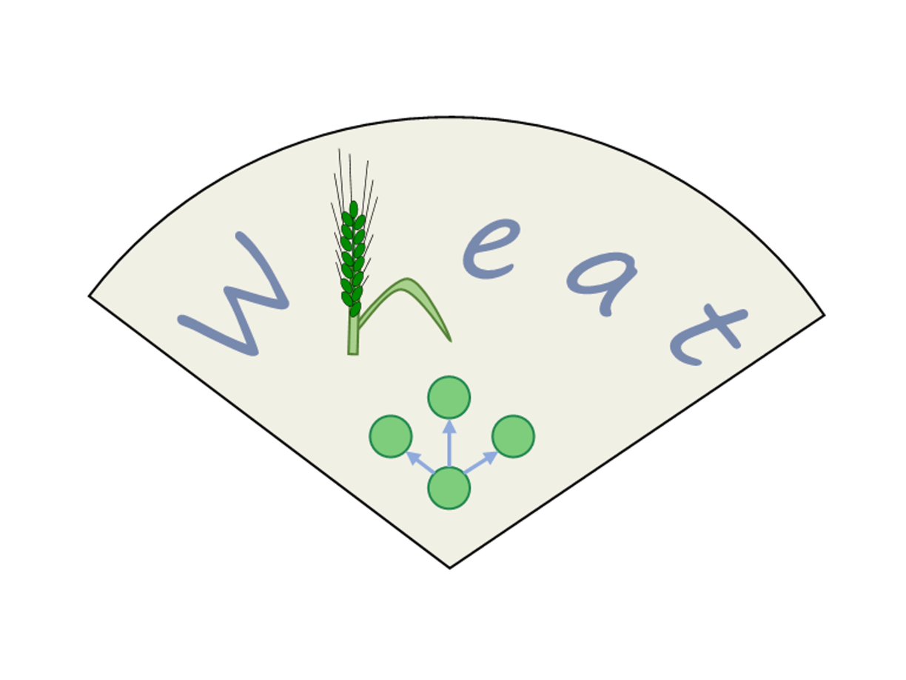
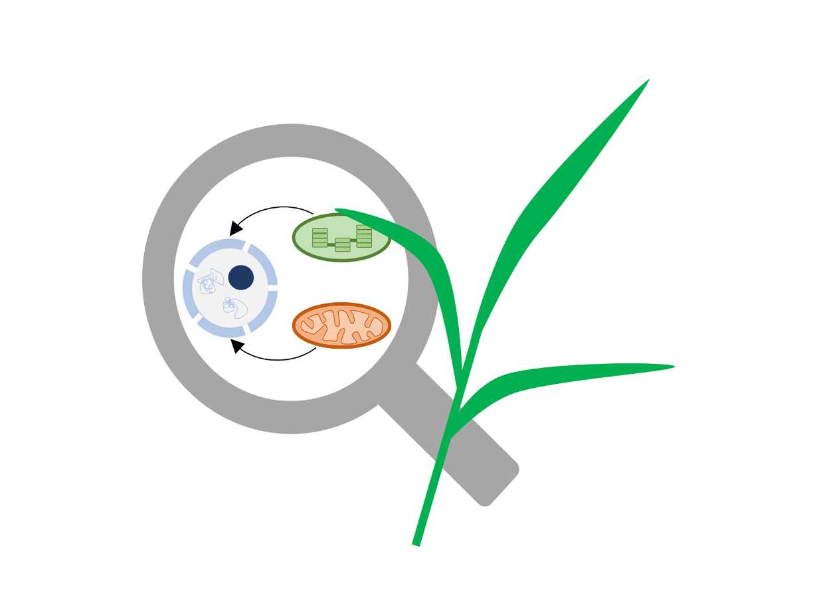
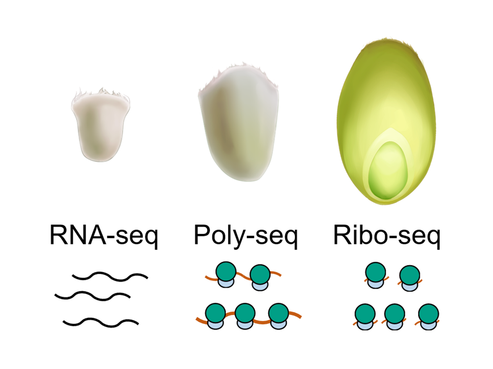

Home
About me
Research interests
Publications
Tools
Tools/Databases
All
Tools
Databases
Triticeae-GeneTribe (TGT)
A comparative genomic and homology database for Triticeae
Learn more

wGRN
A wheat integrative regulatory network platform for functional gene discovery
Learn more

pNOGmap
A database for nucleus organellar genes in Poaceae
Learn more
RGI
A comprehensive pan-genome database for comparative and functional genomics of Asian rice
Learn more

Wheat grain translatome browser
A browser for analyzing the translatomic data of developing wheat grains
Learn more
GeneTribe
A tool for performing collinearity-incorporating homology inference
Learn more
IGTminer
A tool for identifying the evolutionary trajectories of nuclear organellar genes
Learn more